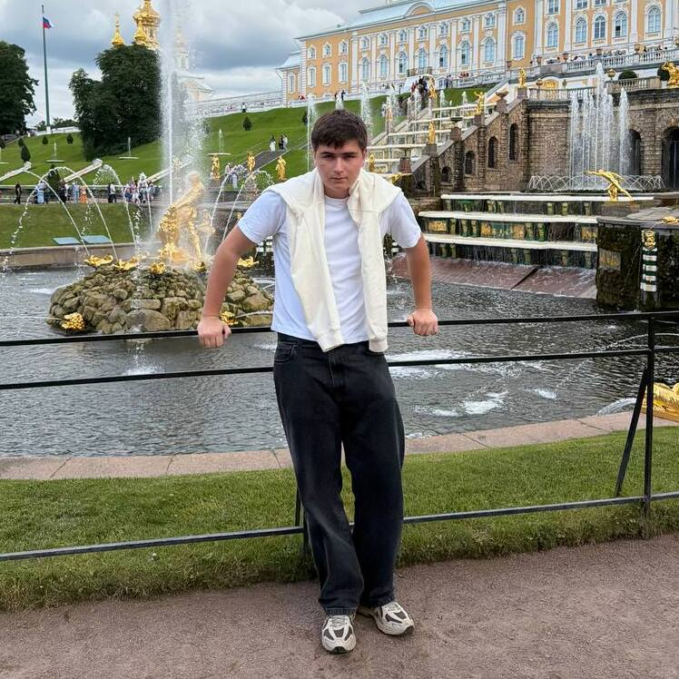

PERSONAL STATEMENT - TIMOFEI ANTOSIEV
HOW I STARTED:
My interest in computer engineering began long before I could put a name to it — with taking apart old electronics at home just to see how the pieces fit together, and asking questions no one around me could fully answer. That curiosity found a proper home when I started attending Kvantorium in Russia, a network of technology centres where school students work on real engineering and programming projects outside the standard curriculum. It was there, building my first simple circuits and writing my first lines of code, that I realised computer engineering was not just a subject I enjoyed but the direction I wanted my education to take.

WHEN I WAS IN HIGH SCHOOL:
This interest became the driving force behind a significant decision: transferring to Heritage Private School to pursue a British-style education better suited to that goal. The transition was not straightforward. I had a short window of time to prepare for entry into a British school system, adapt to a new academic culture, and catch up on content that my peers had been building towards for years. I used that time to focus intensely on the subjects most relevant to computer engineering — Mathematics, Computer Science, and Physics — working independently and, where I needed more structured support, with private tutors on the AS/A Level programme.
MY RESULTS:

That preparation has already produced results. I achieved a B in Mathematics and a C in Computer Science, both of which reflect not just an interest in these subjects but a growing command of the analytical thinking they demand — from algebraic modelling and calculus in Maths to algorithm design, logic and problem decomposition in Computer Science. My result in Physics, a D, does not yet reflect the level I am capable of, and I am currently resitting the exam. Rather than being a setback, this has sharpened my understanding of where my gaps were and given me a clearer, more disciplined approach to revision — one built around working through problems from first principles rather than memorising formulas.
One honest gap in my academic profile is the absence of Olympiad participation. Because of the short timeframe I had to prepare for admission into a British school and the demands of transitioning academic systems, I was not in a position to compete in subject Olympiads the way many of my peers were. I do not see this as a reflection of my ability or ambition, but as a consequence of timing and circumstance — and I have tried to compensate for it through the depth and consistency of my independent study, particularly in Computer Science, where I have gone beyond the syllabus to explore programming concepts, small personal projects, and the underlying logic of how software and hardware interact.